2 The Supervised Recipe
2.1 Simple Linear Regression
The first chapter ended with a map and no methods on it. Every node of Figure 1.49 names a family of problems, and that chapter fitted models to data only as worked examples. This section takes the simplest node that is still a complete learner and builds a learner on it, in full, for the first time: two columns of numbers, no formula available, and a prediction required.
The problem chosen is the most familiar one in the field. A house has not sold, and somebody needs to know what it is worth. A buyer needs the number to decide what to offer, since an offer too high loses money and an offer too low loses the house. A lender needs it because a mortgage is secured against a valuation, and a valuation set too high leaves the loan uncovered if the borrower stops paying. A tax assessor needs it because property tax is charged on an assessed value. Errors in the number are not abstract. In November 2021 Zillow Group announced that it would wind down Zillow Offers, its house-buying business, after writing down $304 million on homes it had bought for more than its own estimates now said they would sell for (Zillow Group, Inc. 2021).
The problem is familiar for a reason, and it is worth seeing why it belongs to this book before anything is fitted. The question concerns a system that cannot be experimented on: nobody can sell the same house ten times to see what happens, so the answer has to come from a model in the sense of Definition 1.1. Three questions then place it on Figure 1.49. There is no law that gives a house’s price in the way Newton’s law of cooling gives the temperature of a cup, so the form of the model must come from data. The price was recorded for houses that have already sold, so the data carries an answer column and the task is supervised in the sense of Definition 1.19. The answer is a number, so the task is regression by Definition 1.21. Figure 2.1 draws the three answers and the address they build.
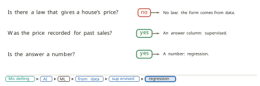
The examples in this section are real sales. De Cock assembled the Ames housing data from the records of the city assessor of Ames, Iowa, and published it in the Journal of Statistics Education in 2011 as an alternative to the older Boston housing data for teaching regression (De Cock 2011). It holds 2,930 residential sales from 2006 to 2010, each described by about eighty recorded columns. Its documentation flags five sales with more than 4,000 square feet of living space, three of them partial sales of unfinished houses and two of them very large houses, and recommends removing them. We follow that advice, and we hold one further sale back from every fit so that it can be predicted honestly later. It is a house of 134 square metres, built in 1968, that sold in 2010. That leaves 2,924 sales.
Living area is converted to square metres at 0.0929 square metres to the square foot, and prices are given in thousands of dollars. Throughout the section \(x_i\) is the living area of sale \(i\) in square metres, \(y_i\) is its price in thousands of dollars, and \(n = 2{,}924\). The averages are \(\bar{x} = 138.8\) m² and \(\bar{y} = 180.4\) thousand dollars.
The problem can now be stated precisely. Estimate a house’s price from what is recorded about it, using houses that have sold. This section makes one simplification and keeps it to the end.
Definition 2.1 (Simple regression) Simple regression is regression with one input column. The word simple refers to the number of inputs and to nothing else.
With one input fixed, the work divides into two tasks that are different in kind. The first is to decide how the world works: what form the relationship between price and area takes. Whatever is decided there is an assumption. The data can support it or contradict it, but the data does not hand it over. The second task is to find, inside that form, the member that fits the recorded sales best, and that answer is computed. The two tasks are the three choices of Definition 1.16 in a different grouping. The first task is the hypothesis space. The second is the loss and the optimiser together.
Task one: how the world works
The assessor recorded about eighty columns for every sale, and simple regression uses one of them. Figure 2.2 plots price against five candidates for the same random thousand sales. Living area shows a strong rise that looks roughly straight. The quality rating rises steeply too, but it is a judgement on a scale from one to ten rather than a measurement, and its points fall in stripes. Year built rises along a curve, flat for decades and then climbing. Lot area cannot be read at all, because a handful of enormous lots stretch the axis and crush every other point into one corner. The month of sale shows no relation to price.
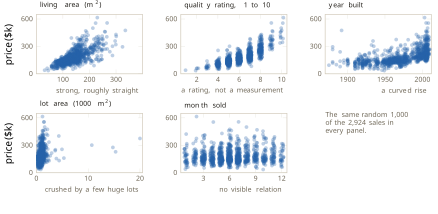
We choose living area, because its rise is strong and looks straight. The method of choosing matters as much as the choice. We looked at the data and decided by eye, which is exploratory data analysis in the sense that Tukey gave the phrase (Tukey 1977) and that Section 1.3 placed inside statistics and data science. Choosing among many inputs by a method rather than by eye is taken up in Sections 2.2 and 2.7, and the related question of which inputs a fitted model relies on in Section 5.7.
With the input chosen, the hypothesis space has to be chosen too. Four families are natural candidates, and each is a whole set of functions rather than one function:
\[ \begin{aligned} &\text{constant:} && y = b, \\ &\text{linear:} && y = b + w\,x, \\ &\text{quadratic:} && y = b + w_1 x + w_2 x^2, \\ &\text{higher order:} && y = b + w_1 x + w_2 x^2 + \cdots + w_k x^k . \end{aligned} \tag{2.1}\]
In the constant family the price does not depend on area at all. In the linear family every extra square metre adds the same amount \(w\), and changing \(b\) moves the line up or down while changing \(w\) tilts it. The quadratic family lets the rise itself grow or shrink with size, so its members can bend once. The higher-order family can bend as often as its order allows. The families are nested: every constant is a line with \(w = 0\), every line is a quadratic with \(w_2 = 0\), and so on upward.
The linear, quadratic and cubic families are fitted in Figure 2.3 to all 2,924 sales by least squares and overlaid. Inside the range of the data neither curved fit departs from the straight line by more than $13 thousand, and the two curves differ from each other by at most $16 thousand, at the largest house. Beyond the largest house sold they part company, and at 450 square metres the highest and the lowest of the three disagree by $69 thousand, in a region where no recorded sale can settle which is right.
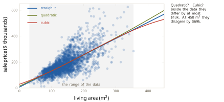
We therefore assume that the world is a straight line. The word assume is chosen with care. Nothing in Figure 2.3 proves the relationship linear, and a more flexible family always follows the recorded points at least as closely as the line does, because it contains the line. Following the points more closely is not a reason to choose a family. Why it is not is the subject of Sections 2.3 and 2.7.
That the shape must be looked at, and cannot be computed from a summary, was put beyond argument by Anscombe in Graphs in Statistical Analysis, published in The American Statistician in 1973 (Anscombe 1973). He constructed four small datasets of eleven points each. All four have a mean of \(x\) equal to 9 and a mean of \(y\) equal to 7.50, and they share much more besides. The least-squares line through each is \(\hat{y} = 3.00 + 0.500\,x\), and the line explains the same fraction of the variation in each. Figure 2.4 plots them. The first is a fair scatter about a straight rise. The second is a smooth curve, for which a straight line is the wrong form. The third lies exactly on a line except for one record. In the fourth, ten points share one value of \(x\) and a single distant point creates the appearance of a trend. Four shapes that call for four different responses produce identical numbers.
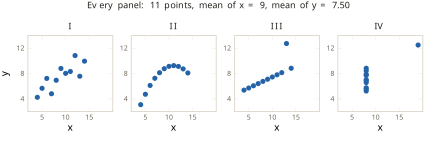
The true model and its estimate
The assumption can now be written as an equation, and the way it is written separates what we claim about the world from what we compute.
Definition 2.2 (True model) The true model of simple linear regression asserts that \[ y_i \;=\; b + w\,x_i + \varepsilon_i , \qquad i = 1, \ldots, n , \tag{2.2}\] where \(b\) and \(w\) are fixed numbers, the same for every house, and the error term \(\varepsilon_i\) is everything about sale \(i\) that the line leaves out.
The quantities in Equation 2.2 are the world’s. The intercept \(b\) and the slope \(w\) are not known and never will be. The model supplies a structure with two slots and asserts that true values fill them. The error term holds the build quality, the neighbourhood, the condition of the roof, the day of the sale and how hard the buyer bargained, and it is unknown for every sale. Adding columns can shrink it but cannot empty it, since there is always something about a sale that the equation does not capture. That is the content of Box’s remark, discussed in Section 1.1, that all models are wrong (Box 1976).
What we compute from the sales are estimates, and they are marked with a hat. The estimates \(\hat{b}\) and \(\hat{w}\) approximate \(b\) and \(w\), and the price the fitted line predicts for a house of area \(x\) is
\[ \hat{y} \;=\; \hat{b} + \hat{w}\,x . \tag{2.3}\]
The estimate in Equation 2.3 carries no error term. A fitted line predicts a price, and it makes no claim to account for everything. The convention holds for the rest of this book: no hat on what the world is, and a hat on what we compute to approximate it.
Every choice of the pair \((\hat{b}, \hat{w})\) is one candidate line. The slope \(\hat{w}\) is the rise in predicted price per extra square metre, so that moving 100 square metres to the right raises the line by \(100\,\hat{w}\). The intercept \(\hat{b}\) is where the line meets zero area. No house has zero area, so \(\hat{b}\) is where the line lands rather than a price anybody paid. Plotting each candidate’s two numbers as a point turns the hypothesis space into a plane, which Figure 2.5 draws for three candidates. Somewhere on that plane is the point \((b, w)\), and we will never see exactly where.
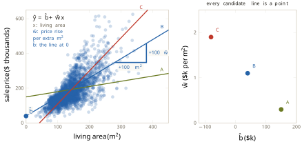
An objection has to be answered before the search begins. Fitting \(b\) and \(w\) by least squares is the same arithmetic that Section 1.1 used to fit the cooling constant \(k\), and Section 1.1 said that fitting \(k\) was numerical computation rather than machine learning. What makes the same arithmetic learning here is the origin of the form and the reach of the claim. The form of the cooling curve came from Newton’s law, and only one constant was left to fill. The straight line came from an assumption read off a plot, chosen from a space of candidates. The cooling law claims to hold beyond the log, because it is a law. The fitted line claims only to be a fair guide to houses like these, inside the range already seen, and that is still a claim about houses not yet sold. Figure 2.6 sets the two fits side by side.
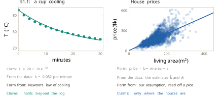
The modelling axis of Figure 1.36 runs from a white box, where the mechanism is written down and every symbol is a claim about the world, to a black box, where no mechanism is claimed and only the mapping from input to output is fitted. The cooling law sits at the white end. The same law with \(k\) fitted to the log sits just inside it, because the form is still the physics. A classifier of handwritten digits, fitted end to end, sits near the black end, and not on it. The fitted line sits well into the interior. The straight-line form is ours, and the two numbers are the data’s. Figure 2.7 places it, the first method to receive a position on that axis.
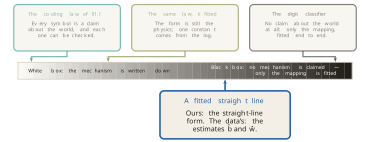
Task two: a score, then a search
The form is now fixed, and task two asks which of its members fits best. That question has two parts: what best means, which is the loss, and how the best member is found, which is the optimiser. The loss comes first, since nothing can be searched for until candidates can be compared.
A line misses each recorded sale by some amount. The miss is measured vertically, as the recorded price minus the predicted price, because price is the quantity predicted and an error in area is of no interest. Squaring each miss and adding the squares gives one number for each candidate line.
Definition 2.3 (Residual sum of squares) The residual sum of squares (RSS) of a candidate line is \[ \mathrm{RSS}(\hat{b}, \hat{w}) \;=\; \sum_{i=1}^{n} \bigl( y_i - (\hat{b} + \hat{w}\,x_i) \bigr)^2 . \tag{2.4}\]
The score in Equation 2.4 is the empirical risk of Equation 1.19 with the squared loss of Equation 1.26, written for candidate lines and multiplied by \(n\). The factor changes the size of the score and leaves the order of the candidates unchanged, so the line that minimises one minimises the other. It is also Equation 1.7 with two constants in place of one. The idea is least squares in the sense of Definition 1.4, published by Legendre in 1805 (Legendre 1805) and by Gauss in 1809 (Gauss 1809), as Section 1.1 told.
A small worked case shows what the score is made of. Take eight sales, one from each band of forty square metres between 60 and 380 square metres, and the candidate line \(\hat{y} = 20 + 1.05\,x\), which is not the best line and was not chosen to be. Each miss is squared and drawn as a square at true scale in Figure 2.8, and the eight squares are stacked into one bar. The total is 69,188 in units of thousands of dollars squared. Nobody can picture that unit, and nothing requires it, because RSS totals are only ever compared with each other. What the bar shows clearly is the split. The sale at 325 square metres sold for $584.5 thousand, the line predicts $361.4 thousand there, and that one miss of $223 thousand is 72% of the whole score.
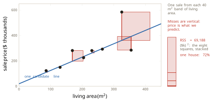
The 72% is not an accident of the example. Squaring makes the cost of a miss grow with the square of its size, so a miss ten times larger costs a hundred times more, and one large miss can outweigh many small ones. Two lines through the same four houses make the consequence concrete. Line A misses them by 40, 40, 40 and 60 thousand dollars. Line B passes exactly through three of them and misses the fourth by 100 thousand. Under squares, line A scores \(1{,}600 + 1{,}600 + 1{,}600 + 3{,}600 = 8{,}400\) and line B scores \(10{,}000\), so squares prefer A. Under the sum of distances, A scores 180 and B scores 100, so distances prefer B. Figure 2.9 draws both. The same houses under two losses produce two different winners, and the squared loss prefers many small misses to one large one.
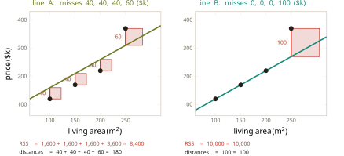
On the Ames data the cost of this preference is visible in the five sales the documentation flags. With them restored there are 2,929 sales, and the five carry 6.8% of the whole RSS between them. They pull the fitted slope from $1,251 per square metre down to $1,202, as Figure 2.10 shows.
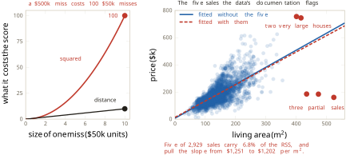
Squares are chosen nonetheless, for what they buy. The score they produce is a smooth surface over the plane of candidates with a single lowest point, which the next part of this section draws, and that makes the search tractable. What they cost returns when outliers are examined at the end of the section, and Section 2.5 gives the squared loss a justification from probability that this section does not need.
With a score in hand, the search can begin. The plainest search tries a grid of candidates and keeps the best. Before running it we change the units in which area is measured, which changes how the two numbers read and changes nothing about the lines. Let
\[ u_i \;=\; \frac{x_i - \bar{x}}{100} , \tag{2.5}\]
the area of sale \(i\) measured from the average house in hundreds of square metres, and write the candidate line as \(\hat{y} = \hat{b} + \hat{w}\,u\). In these units \(\hat{b}\) is the predicted price of a house of average size, around $180 thousand, and \(\hat{w}\) is the rise in thousands of dollars per extra hundred square metres, so a slope of $1.25 thousand per square metre reads as 125. We keep the names \(\hat{b}\) and \(\hat{w}\) for the pair in these units, and every figure from here to the closed form uses them; where the everyday pair is needed it carries a subscript 0. A line written in everyday units as \(\hat{b}_0 + \hat{w}_0 x\) is the same line as \(\hat{b} + \hat{w}\,u\) exactly when \(\hat{w} = 100\,\hat{w}_0\) and \(\hat{b} = \hat{b}_0 + \hat{w}_0\,\bar{x}\). The reason for the change is practical. In raw units the two parameters live on scales so different that the score’s curvature, the rate at which its slope changes, is about 222,000 times greater along the steepest direction of the plane than along the direction at right angles to it. The bowl is a long thin trough, and that is a difficulty for Section 2.4 rather than for this one. One property of the new units is used repeatedly below: because each \(u_i\) is a distance from the average,
\[ \sum_{i=1}^{n} u_i \;=\; 0 . \tag{2.6}\]
Two loops then perform the search. The intercept runs from 100 to 260 in steps of 10, giving 17 values, and the slope from 0 to 250 in steps of 10, giving 26 values. Every one of the \(17 \times 26 = 442\) pairs is scored by Equation 2.4 and the best is kept. It is \((\hat{b}, \hat{w}) = (180, 130)\), a line that runs through the middle of the cloud of sales, and its RSS is 0.17% above the lowest possible. Two loops work.
Their costs are three, and Figure 2.11 draws them side by side. The first is resolution. The true bottom lies between grid points, so the best grid point misses it, and moving closer requires a finer grid and more lines to score. The second is range. The loops search only where they are told to, and a grid placed wrongly returns a best point on its own edge, here 18% above the bottom, with no sign that anything is amiss. The third is the count. With 100 values for each of \(p\) parameters the grid holds
\[ N(p) \;=\; 100^{\,p} \tag{2.7}\]
lines. Two parameters give \(10^4\) lines and ten give \(10^{20}\), which at a billion lines a second takes about 3,200 years. Every line a billion-a-second machine could have scored since the Big Bang, roughly \(4 \times 10^{26}\) of them, is exceeded at fourteen parameters. This is the candidate count of Section 1.3 met again, now in a problem with only two parameters where it can still be paid.
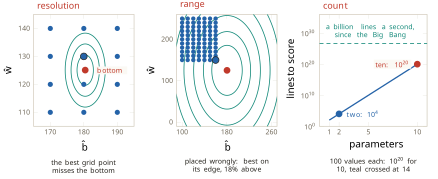
Every point of the plane is a line and every line has a score, so the score is a surface over the plane. Figure 2.12 draws it from above as contours, like a map of a valley. The contours are closed rings around one lowest point, at \(\hat{b} = 180.4\) and \(\hat{w} = 125.1\). A straight cut through that point with \(\hat{b}\) held fixed gives a curve with one bottom, which is the one-parameter bowl of Figure 1.33. The two-parameter score is the same object in two directions. Seen in three dimensions it is a bowl, and the contour map is that bowl seen from directly above.
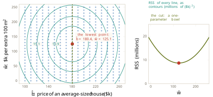
That the surface is a bowl with exactly one bottom is not a feature of these data, and a few lines of algebra show why. Write \(S_{uu} = \sum u_i^2\), \(S_{uy} = \sum u_i y_i\) and \(S_{yy} = \sum (y_i - \bar{y})^2\). In Equation 2.4 with centred area, split each \(y_i - \hat{b}\) as \((y_i - \bar{y}) + (\bar{y} - \hat{b})\) and expand the square. Three cross terms appear. One carries \(\sum (y_i - \bar{y})\), which is zero because deviations from a mean add to zero. One carries \(\sum u_i\), which is zero by Equation 2.6. The third carries \(\sum u_i (y_i - \bar{y})\), which by Equation 2.6 is \(S_{uy}\). Completing the square in \(\hat{w}\) then gives
\[ \mathrm{RSS}(\hat{b}, \hat{w}) \;=\; n\,(\hat{b} - \bar{y})^2 \;+\; S_{uu}\Bigl(\hat{w} - \frac{S_{uy}}{S_{uu}}\Bigr)^2 \;+\; \Bigl(S_{yy} - \frac{S_{uy}^2}{S_{uu}}\Bigr) . \tag{2.8}\]
The last bracket does not depend on the candidate. The first two terms are squares with positive coefficients (\(S_{uu}\) is positive unless every house has the same area), so they are never negative and are both zero at exactly one point. The score is therefore a sum of two upward parabolas, one in each direction, and it has one bottom and nowhere else flat. On the Ames data \(n = 2{,}924\) and \(S_{uu} = 596.76\), so the bowl curves about five times more steeply along \(\hat{b}\) than along \(\hat{w}\), which is why the contours of Figure 2.12 are ellipses stretched along the \(\hat{w}\) axis. The same algebra applies to any subset of the sales, with area measured from that subset’s own average, and that settles a question about the amount of data.
The bowl was built from all 2,924 sales. Built from a random 10% of them, 292 houses, it is still a smooth bowl with one bottom, and Equation 2.8 applied to those 292 houses says it must be. Drawn in the coordinates of the full data the bowl is tilted, since the subset’s average area is not exactly 138.8, but tilting does not add a second bottom. What changes is where the bottom lies. On one nested sequence of samples, 10%, 30%, 70% and all of the sales put the bottom’s \(\hat{w}\) at 114.0, 122.5, 124.7 and 125.1. Repeating the 10% draw two hundred times scatters the bottoms widely. Measured by the standard deviation across the two hundred draws, \(\hat{w}\) varies by about 9.6 and \(\hat{b}\) by about 3.0. At 30% the standard deviation of \(\hat{w}\) is about 4.6, and at 70% about 2.2. With every sale, every draw is the same set of houses, so there is one answer. Figure 2.13 shows the four clouds. More data does not smooth this bowl, since the bowl is smooth at any size. It fixes where the bottom is. Even with all 2,924 sales the bottom gives estimates of \(b\) and \(w\) and not the values themselves, and Section 2.6 gives the spread across samples its name and its law.
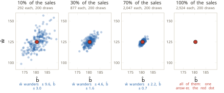
Finding the bottom
There is more than one way down a bowl, and racing four of them on this one shows what each costs. Figure 2.14 reports for each search how much work it did and how close it ended. Grid search scores 442 lines and ends 0.17% above the bottom. Random search, with the same budget of 442 lines placed at random, ends 0.69% above, which is worse for the same work. Hill climbing, met in Section 1.2, stands at a point, scores its four neighbours one grid step away, moves to the best and repeats. It scores 73 lines and stops on the same grid point as the grid, because its steps are the grid’s size. Gradient descent scores no neighbours at all. It reads the slope where it stands and steps downhill, and after reading the slope 60 times it ends at the bottom to within 0.01%. Evolutionary search, also met in Section 1.2, is left out of the race. So is the exact answer, which this section reaches after gradient descent.
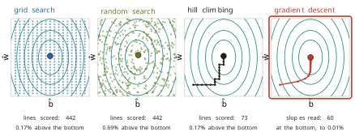
Gradient descent was introduced in Section 1.3 on a bowl of one parameter, with the slope taken as given. Taking it apart in two parameters needs the slope itself made precise, and the clearest place to do that is a curve of one parameter that has both a top and a bottom.
Standing at one point of a curve \(f(\theta)\), there are only two moves: make \(\theta\) larger, or make it smaller. The slope decides which of the two goes down. It is a signed number. Its sign is a direction and its size is a steepness. A positive slope means that \(f\) increases as \(\theta\) increases, so uphill is to the right and downhill to the left. A negative slope means the reverse. At a top or a bottom the slope is zero and points nowhere, which is how a top or a bottom is recognised. Following the slope climbs, and going against it descends, so the two rules differ only in a sign:
\[ \text{climb: } \theta \leftarrow \theta + \eta \cdot \text{slope}, \qquad \text{descend: } \theta \leftarrow \theta - \eta \cdot \text{slope} , \tag{2.9}\]
where the step size \(\eta\) is chosen in advance. Because a step proportional to the slope is long where the ground falls fast and short where it flattens, the descent slows as it approaches a bottom of its own accord.
What remains is how the slope at a point is computed. One point has neither a rise nor a run, so a second point is taken a distance \(h\) away and the rise is divided by the run. That ratio is the slope of the secant, the straight line through both points, and it is the average slope between them. Shrinking \(h\) moves the second point towards the first, and the ratio settles on a single value.
Definition 2.4 (Derivative) The derivative of \(f\) at \(\theta\) is \[ f'(\theta) \;=\; \lim_{h \to 0} \frac{f(\theta + h) - f(\theta)}{h} , \tag{2.10}\] the slope of the curve at the point \(\theta\) itself. The secant through \(\theta\) and \(\theta + h\) becomes, in the limit, the tangent at \(\theta\).
The curve of Figure 2.15 is \(f(\theta) = \theta^3 - 3\theta\), and the point is \(\theta = 1.5\). The rise over a run of \(h\) is
\[ \frac{f(1.5 + h) - f(1.5)}{h} \;=\; \frac{(1.5 + h)^3 - 3(1.5 + h) - (1.5^3 - 4.5)}{h} \;=\; 3.75 + 4.5\,h + h^2 , \tag{2.11}\]
after expanding the cube and dividing by \(h\). At \(h = 0.6\) the ratio is 6.81, at \(h = 0.3\) it is 5.19, and at \(h = 0.05\) it is 3.98. As \(h\) goes to zero the two terms that carry \(h\) vanish, and the derivative is \(f'(1.5) = 3.75\). The same expansion at a general \(\theta\) gives \(f'(\theta) = 3\theta^2 - 3\), which is zero at \(\theta = -1\) and \(\theta = 1\), the top and the bottom of the curve. The idea goes back to Newton and Leibniz in the late seventeenth century, and the limit in Equation 2.10 was made precise in the nineteenth. From here on, the slope at a point means the derivative there.
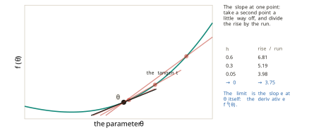
The RSS has two parameters, so a single slope does not describe it. Holding one parameter still and letting the other move cuts the bowl along one direction and returns the problem to one dimension.
Definition 2.5 (Partial derivative and gradient) A partial derivative is the derivative along one parameter while every other parameter is held still. For the score of Equation 2.4 they are written \(\partial\,\mathrm{RSS}/\partial \hat{b}\) and \(\partial\,\mathrm{RSS}/\partial \hat{w}\). The gradient is the vector of all the partial derivatives, \[ \nabla \mathrm{RSS} \;=\; \Bigl( \frac{\partial\,\mathrm{RSS}}{\partial \hat{b}},\; \frac{\partial\,\mathrm{RSS}}{\partial \hat{w}} \Bigr) . \tag{2.12}\]
Each entry of Equation 2.12 is the slope in its own direction, and together they point uphill. The symbol \(\nabla\) was used in Equation 1.21 as a name for the slope, and Definition 2.5 is what the name means.
Both partial derivatives of the RSS follow from Equation 2.10 alone. Write the miss of sale \(i\) as \(r_i = y_i - \hat{b} - \hat{w}\,u_i\). Moving \(\hat{b}\) by \(h\) changes the miss to \(r_i - h\), and its square changes by \((r_i - h)^2 - r_i^2 = -2h\,r_i + h^2\). Dividing by \(h\) and letting \(h\) go to zero leaves \(-2r_i\). Moving \(\hat{w}\) by \(h\) changes the miss to \(r_i - h\,u_i\), and the same steps leave \(-2u_i r_i\). Adding over the sales gives
\[ \frac{\partial\,\mathrm{RSS}}{\partial \hat{b}} \;=\; -2 \sum_{i=1}^{n} \bigl( y_i - \hat{b} - \hat{w}\,u_i \bigr), \qquad \frac{\partial\,\mathrm{RSS}}{\partial \hat{w}} \;=\; -2 \sum_{i=1}^{n} u_i \bigl( y_i - \hat{b} - \hat{w}\,u_i \bigr) . \tag{2.13}\]
Section 2.2 derives the same result for any number of inputs. Descent goes against the gradient, and the whole method fits on one line.
Definition 2.6 (Gradient descent on the RSS) Start at any candidate \((\hat{b}, \hat{w})\). Compute the gradient there by Equation 2.13, and step against it: \[ (\hat{b}, \hat{w}) \;\leftarrow\; (\hat{b}, \hat{w}) \;-\; \eta\, \nabla \mathrm{RSS}(\hat{b}, \hat{w}) . \tag{2.14}\] Stop when both partial derivatives are near zero; otherwise compute the gradient again.
The update in Equation 2.14 is Equation 1.21 with \(\theta\) standing for two numbers at once. Cauchy published the method in the Comptes Rendus in 1847 (Cauchy 1847), as Section 1.3 recorded. On the Ames bowl, with \(\eta = 0.0001\) and a start at \((110, 30)\), sixty passes of the loop reach \((180.4, 125.1)\). Figure 2.16 draws the path together with the two cuts whose slopes give the first step.
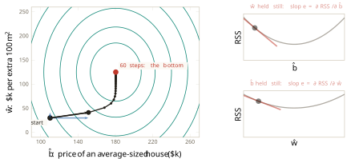
One step can be worked by hand, from a candidate at the upper right of the plane, \(\hat{b} = 240\) and \(\hat{w} = 200\). By Equation 2.13 and Equation 2.6 the first partial derivative is \(-2(n\bar{y} - n\hat{b})\), which is \(-2 \times 2{,}924 \times (180.4175 - 240) = +348{,}438\). The second is \(-2(S_{uy} - \hat{w}\,S_{uu})\), with \(S_{uy} = 74{,}655.9\) and \(S_{uu} = 596.756\), which is \(+89{,}391\). Multiplying each by \(\eta = 0.0001\) gives steps of 34.84 and 8.94, and subtracting them gives
\[ \hat{b} \;=\; 240 - 34.84 \;=\; 205.2, \qquad \hat{w} \;=\; 200 - 8.94 \;=\; 191.1 . \tag{2.15}\]
Both partial derivatives were positive, so both numbers fell, and the RSS dropped from 22.4 million to 13.1 million. Moving against the gradient is all that gradient descent ever does.
The path in Figure 2.16 bends rather than heading straight for the bottom, and Equation 2.8 explains why. Because \(\sum u_i = 0\), the update of \(\hat{b}\) involves only \(\hat{b}\) and the update of \(\hat{w}\) involves only \(\hat{w}\). Each step multiplies the distance of \(\hat{b}\) from its best value by \(1 - 2n\eta = 0.42\), and the distance of \(\hat{w}\) from its best value by \(1 - 2S_{uu}\eta = 0.88\). The intercept settles within a few steps, and the slope takes the rest of the sixty. The same factors show that the step size cannot be chosen freely: a factor larger than one in size makes each step overshoot further than the last. How to choose \(\eta\) well is the subject of Section 2.4.
Gradient descent earns its place by four properties, and the comparison with the grid makes them plain. It scores nothing but the point where it stands: the grid scored 442 lines, and descent reads two slopes and moves. Its cost does not grow with a grid, since there is no resolution to pick and no range to guess, although a step size and a starting point remain to be chosen. It scales: one slope per parameter means two here and millions in a neural network, against the \(10^{20}\) lines a grid would need for ten parameters. On this bowl it cannot be misled, because Equation 2.8 has one bottom and nowhere else is flat, so downhill leads to the same place from any start. Surfaces with more than one valley exist, and they are taken up in Section 2.4.
Solving instead of walking
The bottom of the bowl is the one point where both partial derivatives are zero, and for this model the partial derivatives are formulas. Rather than walking to the place where the slopes vanish, we can ask directly where that is. Setting both expressions of Equation 2.13 to zero gives two equations in two unknowns:
\[ \sum_{i=1}^{n} \bigl( y_i - \hat{b} - \hat{w}\,u_i \bigr) \;=\; 0, \qquad \sum_{i=1}^{n} u_i \bigl( y_i - \hat{b} - \hat{w}\,u_i \bigr) \;=\; 0 . \tag{2.16}\]
Measuring area from the average house makes the equations come apart. By Equation 2.6 the first reduces to \(n\bar{y} - n\hat{b} = 0\), and the second to \(S_{uy} - \hat{w}\,S_{uu} = 0\). So
\[ \hat{b} \;=\; \bar{y} \;=\; 180.4, \qquad \hat{w} \;=\; \frac{\sum_i u_i\, y_i}{\sum_i u_i^2} \;=\; 125.1 , \tag{2.17}\]
the same point that sixty steps of descent approached, reached with no steps at all. Equation 2.8 confirms from the other side that this point is the minimum and not merely a flat place, since both squared terms vanish there and nowhere else.
Converting back to everyday units with \(\hat{w}_0 = \hat{w}/100\) and \(\hat{b}_0 = \hat{b} - \hat{w}_0\,\bar{x}\), and dropping the subscripts, gives the formulas in the form they are usually printed.
Definition 2.7 (Least-squares line) The least-squares line through the points \((x_i, y_i)\) has slope and intercept \[ \hat{w} \;=\; \frac{\sum_i (x_i - \bar{x})(y_i - \bar{y})}{\sum_i (x_i - \bar{x})^2}, \qquad \hat{b} \;=\; \bar{y} - \hat{w}\,\bar{x} . \tag{2.18}\]
The second formula says that the least-squares line passes through the point of averages \((\bar{x}, \bar{y})\), the average house. On the Ames data that point is 138.8 square metres at $180.4 thousand, the slope is \(\hat{w} = 1.251\) thousand dollars per square metre, and the intercept is \(\hat{b} = 6.78\). Descent after sixty steps and the formulas give the same line, as Figure 2.17 shows. The formulas follow from the normal equations of Legendre and Gauss. Pearson, in the third of his Mathematical Contributions to the Theory of Evolution, published in the Philosophical Transactions of the Royal Society in 1896 (Pearson 1896), gave the product-moment correlation coefficient. He wrote the regression slope as that coefficient times the ratio of the two standard deviations, which is the same ratio of sums. The word regression is older. Galton used it in 1886 for the tendency of children’s heights to fall back towards the average (Galton 1886), as Section 1.4 described.
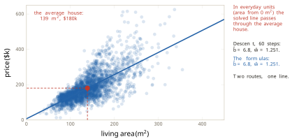
An answer that can be written down and computed in one pass is called a closed form. It exists for this model and for very few others in this book, and the comparison with stepping explains why the book mostly steps. Figure 2.18 sets out the trade. Stepping only approaches the answer, and how well depends on the step size. On the cut along \(\hat{w}\), a step size about right reaches the bottom in a few steps. One too small has barely moved after ten, and one too large overshoots further at every step and climbs out of the bowl. The formula is exact, but with \(p\) inputs it means solving \(p\) equations at once. The standard route goes through a table of \(p \times p\) numbers, a matrix, that must be inverted, and the work grows like \(p^3\), so ten times the inputs costs a thousand times the work and ten thousand inputs cost about \(10^{12}\) operations for one fit. And sometimes there is no single answer to compute. Suppose living area is entered twice, once in square metres and once in square feet. The two inputs carry the same information, so the score depends only on a combination of their two weights, and every point along a line of candidates is a bottom. The generalised inverse that Penrose defined in 1955 (Penrose 1955) picks one of those answers, but when two inputs are nearly rather than exactly equal it magnifies rounding error and the weights it returns can be badly wrong. Section 2.2 makes the matrix, the inverse and the failure precise. Stepping is cheap per step, works for any loss that has a slope, and scales to millions of parameters, and its price is that it only approaches the bottom.
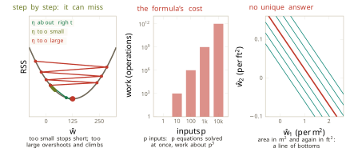
Reading the fitted line
The fitted line is
\[ \hat{y} \;=\; 6.78 + 1.251\,x , \tag{2.19}\]
with \(\hat{y}\) in thousands of dollars and \(x\) in square metres. The house held back at the start has 134 square metres of living space, and Equation 2.19 predicts $174 thousand for it. It sold for $163 thousand. Because the sale was excluded from the fit, that is a genuine prediction, and it is $11 thousand too high.
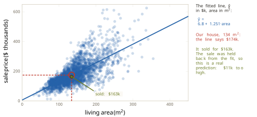
All three choices of Definition 1.16 have now been made on a real problem. The hypothesis space is every straight line in area. The loss is the residual sum of squares. The optimiser is gradient descent or the closed form. Figure 2.20 shows the filled card. This is the smallest complete learner, and every later method in this book can be read as a substitution into one or more of its slots. The question printed beneath the card is still open: whether the line that wins on the recorded sales will do well on sales it has never seen. Section 2.8 answers it.
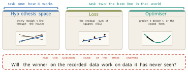
Each of the two numbers has a reading, and each reading has a limit. The slope says that, among these houses, each extra square metre goes with $1,251 more in price. The phrase among these houses matters, because the slope describes how price and area vary together in Ames between 2006 and 2010, and it says nothing about what adding a room to a particular house would do. The intercept, $6.78 thousand, is not the price of a house with no floor, and no such house was ever sold. It is where the line meets zero area. The recorded areas run from 31 to 355 square metres. A prediction at 200 square metres, $257 thousand, lies inside that range. A prediction at 450 square metres, $570 thousand, lies outside it and is a guess, which is the point Section 1.1 made about a fitted model that interpolates. Figure 2.21 marks both.
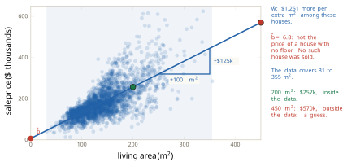
How good the line is depends on what it is compared with, and the natural baseline is the simplest predictor available: the average price for every house, whatever its area. That predictor is the constant family of Equation 2.1 at its best, and its score is \(S_{yy} = \sum (y_i - \bar{y})^2 = 18.0\) million. The fitted line scores 8.7 million, so it leaves 0.48 of the baseline’s squared misses.
Definition 2.8 (Coefficient of determination) The coefficient of determination of a fitted line is \[ R^2 \;=\; 1 - \frac{\mathrm{RSS}(\hat{b}, \hat{w})}{\sum_i (y_i - \bar{y})^2} , \tag{2.20}\] the fraction of the squared variation about the mean that the line accounts for.
For the Ames line \(R^2 = 1 - 0.48 = 0.52\). Living area explains about half the variation in price, and half is left. Wright introduced the name in Correlation and Causation, published in the Journal of Agricultural Research in 1921 (Wright 1921). The number is printed by every regression report, and it is often read as more than it is. Each of Anscombe’s four datasets has \(R^2 = 0.67\) under its fitted line, including the curve and the dataset whose trend is made by a single point. The number cannot tell them apart, and the plots of Figure 2.4 can.
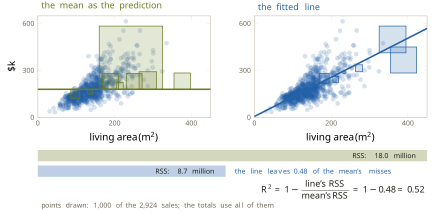
What the line leaves behind is its residuals, \(r_i = y_i - \hat{y}_i\) in the sense of Definition 1.3. A residual is not the error term \(\varepsilon_i\) of Equation 2.2. The error term is the miss of the true line, which is never seen, and the residual is the miss of the fitted line, which is computed. Figure 2.23 plots the residuals against living area. No straight-line trend remains, and least squares guarantees that much and no more: the two equations of Equation 2.16 say precisely that the residuals add to zero and that they do not tilt against area. A curved trend could survive them, as Anscombe’s second dataset would show, and none is visible here. What does remain is a change of spread. Measured by the standard deviation of the residuals within a band of sizes, the typical residual is about $23 thousand for houses between 40 and 100 square metres and about $106 thousand for those between 240 and 360. A single figure for the typical miss of the line would flatter it for small houses and mislead for large ones.
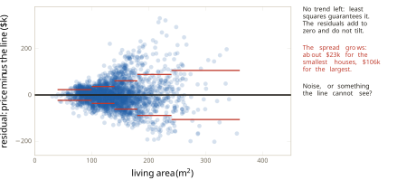
The cost of squaring, set aside earlier, can now be measured on a single record. Take thirty typical sales, one from the middle of each size band, and fit a line to them. Its slope is $1,088 per square metre. Add one more sale: 524 square metres, sold for $160 thousand, one of the five sales the documentation flags, a partial sale of a very large unfinished house. Refitted with it, the slope falls to $284 per square metre. One record in thirty-one has cut the slope to about a quarter, and after pulling the line towards itself that record still carries 24% of the RSS. One large miss counts for more than many small ones, so the line bends to shrink it. Figure 2.24 draws the two lines.
Definition 2.9 (Outlier) An outlier is a record that lies far from the pattern of the rest of the data. Under the squared loss it can have a large influence on the fit, the more so the further its input lies from the average.
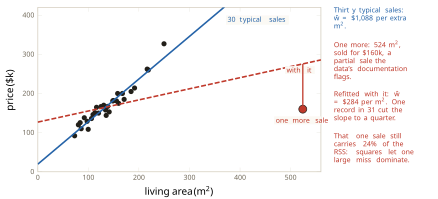
Two common rules find candidates, and Figure 2.25 applies both to all the sales with the five flagged ones restored. The first is distance from the line. Fit the line, take each residual, and flag any that exceeds three times the standard deviation of the residuals, here 3 × $56.5 thousand. Forty-six sales are flagged, and all five documented sales are among them. The second needs no line at all and asks how far a house is from the other houses. Tukey’s box plot, from Exploratory Data Analysis of 1977 (Tukey 1977), draws a box from the lower quartile \(Q_1\) to the upper quartile \(Q_3\) of living area, so that the box holds the middle half of the houses, and sets fences at
\[ Q_1 - 1.5\,(Q_3 - Q_1) \quad\text{and}\quad Q_3 + 1.5\,(Q_3 - Q_1) . \tag{2.21}\]
Here \(Q_1 = 104.6\) and \(Q_3 = 161.9\) square metres, so the upper fence is at 247.9 square metres. Seventy-four houses lie past it, and the five flagged sales lie far past it.
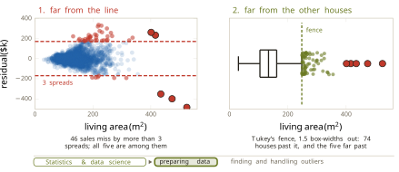
A flag is a question, not a verdict. Most of the seventy-four houses past the fence are there only because they are large, and there is nothing wrong with them. The flagged records are examined one at a time, a decision is made, and the reason is written down. A recording error is corrected or removed. A record of a different kind of transaction is removed and the removal reported, which is what the documentation recommends for the five partial and unusual sales. A record that is real but rare is kept, and the response is a loss that squares the misses less, which Section 2.5 introduces. This work belongs to the preparation of data, inside statistics and data science, and in practice a large share of any project is spent on it before anything is fitted.
What the line assumes, and where it fails
Every result in this section rests on assumptions, and each one is a place where the method can fail.
- The relationship is a straight line. This was chosen by looking, and Figure 2.3 shows only that the line is not contradicted inside the data. Outside the recorded range the straight, quadratic and cubic fits disagree by $69 thousand at 450 square metres, and nothing in the data decides between them.
- Only the price is in error. The misses are vertical, so the recorded area is treated as exact. An area recorded wrongly is not measured as a miss at all.
- Misses are judged by their squares. One record of a different kind cut the slope to a quarter. The loss that made the bowl smooth is the loss that lets one record dominate.
- The sales stand for the houses to be priced. The slope describes Ames between 2006 and 2010. Another city, another decade or a house of 450 square metres is a claim the data does not support, and nothing in this section tests the line on houses it has not seen.
The deepest failure is visible in the residuals themselves. Figure 2.26 plots the residuals of Equation 2.19 against the quality rating, one of the columns set aside when living area was chosen. Averaged at each level of quality, the residuals rise with the rating. The line underprices the 26 best-built houses by $166 thousand on average and overprices the four houses rated lowest by $62 thousand, although four houses is a thin basis for the second figure. Structure in the residual means something is missing from the model, which is the lesson of Neptune in Section 1.1. What the line left behind is not noise. It is another column.
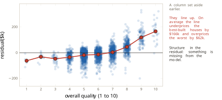
So one input is not enough, and the next section gives the line a second input and a third. Every computation of this section then has to be done again with many weights at once, and doing it shows that least squares is a projection.
Exercises
For each of the four families in Equation 2.1, count the parameters and state which of the other families it contains. Use the nesting to explain why the cubic fit in Figure 2.3 can never have a larger RSS on the same sales than the straight-line fit, and why that fact alone is no reason to prefer the cubic.
Classify each of the following as part of the true model or as something computed from the data, and give its meaning in words for the Ames problem: \(b\), \(\hat{w}\), \(\varepsilon_i\), \(\hat{y}_i\), \(r_i\), \(\bar{y}\), \(\mathrm{RSS}(\hat{b}, \hat{w})\). Then explain why \(r_i\) and \(\varepsilon_i\) are different quantities even for the sale on which both are defined, and say which of the two can be plotted.
Three sales have areas 100, 140 and 180 square metres and prices 150, 190 and 200 thousand dollars. Use Equation 2.18 to find \(\hat{w}\) and \(\hat{b}\). Compute the three residuals and check that they satisfy both equations of Equation 2.16. Then compute the RSS of the line, the RSS of the mean as a predictor, and \(R^2\) by Equation 2.20.
Gradient descent on the Ames bowl starts at \((\hat{b}, \hat{w}) = (110, 30)\) in the centred units of Equation 2.5, with \(\eta = 0.0001\). Using Equation 2.13 and Equation 2.6, together with \(n = 2{,}924\), \(\bar{y} = 180.42\), \(S_{uu} = 596.76\) and the bottom \(\hat{w} = 125.10\), compute the gradient at the start and the candidate after one step. Explain the signs of both partial derivatives by locating the start on Figure 2.12.
The centred bottom is \((\hat{b}, \hat{w}) = (180.4, 125.1)\) with \(\bar{x} = 138.8\) square metres. Convert it to everyday units and check the result against Equation 2.19. Then find the slope of the least-squares line if area were recorded in square feet instead of square metres, given that one square metre is 10.764 square feet, and state what happens to \(\hat{b}\), to the RSS and to \(R^2\).
Derive Equation 2.8 from Equation 2.4 written in centred units. Expand the square, use Equation 2.6 to remove the cross terms, and complete the square in each parameter. Deduce that the RSS has exactly one minimum, that the minimum value is \(S_{yy} - S_{uy}^2/S_{uu}\), and that \(R^2 = S_{uy}^2/(S_{uu}\,S_{yy})\) for the least-squares line.
Using Equation 2.14, Equation 2.13 and Equation 2.6, show that each step of gradient descent multiplies \(\hat{b} - \bar{y}\) by \(1 - 2n\eta\) and multiplies the distance of \(\hat{w}\) from its best value by \(1 - 2S_{uu}\eta\). With the Ames values of exercise 4, find how many steps are needed from \(\hat{w} = 30\) before \(\hat{w}\) is within 0.05 of 125.10, and compare the answer with the sixty steps of Figure 2.16. Then find the largest step size for which the walk does not move away from the bottom in either direction, and explain why it is smaller than the largest step size the cut along \(\hat{w}\) alone would tolerate.
Suppose living area is entered twice, as \(x\) in square metres and as \(10.764\,x\) in square feet, so that the hypothesis space is \(\hat{y} = \hat{b} + \hat{w}_1 x + \hat{w}_2 (10.764\,x)\). Show that every pair \((\hat{w}_1, \hat{w}_2)\) with \(\hat{w}_1 + 10.764\,\hat{w}_2 = 1.251\), together with \(\hat{b} = 6.78\), gives the same RSS as Equation 2.19. Explain what this means for the equations obtained by setting all three partial derivatives to zero, and connect the answer to the right-hand panel of Figure 2.18.